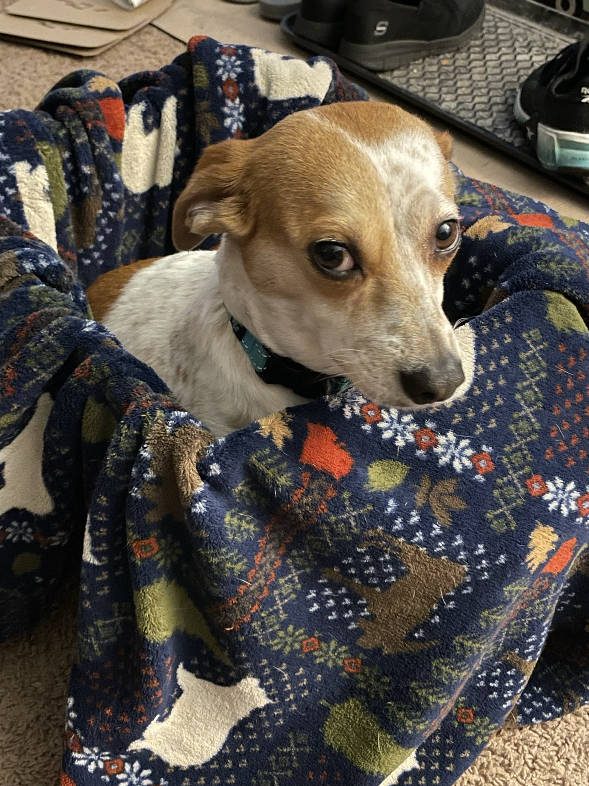
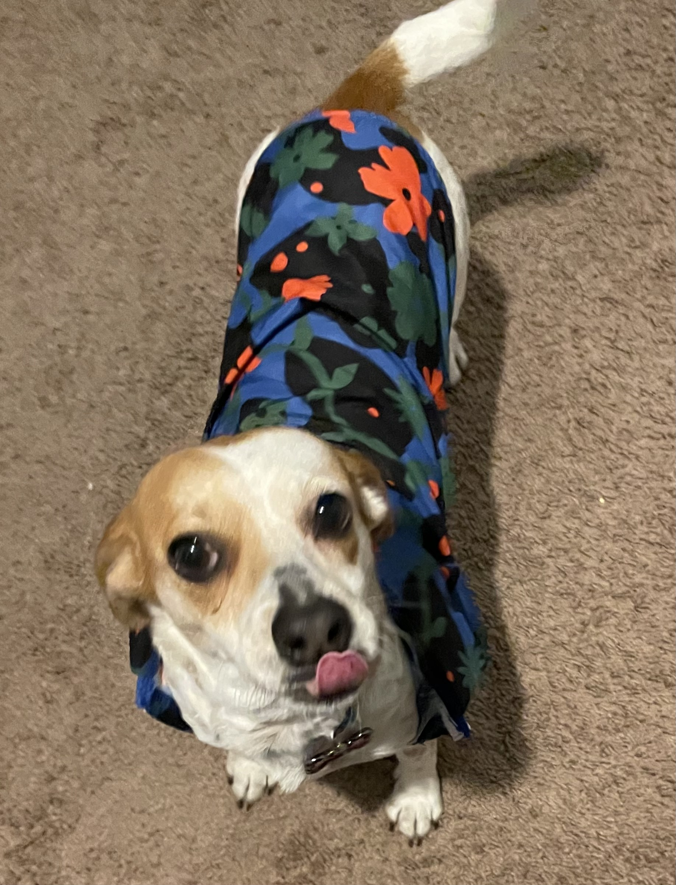

I'm a Video Buff. I grew up without TV, unless you count SnowBlown PBS on Rabbit Ears!
These days I watch EVERYTHING! If I had to pick a favorite:
I've watched the Disney Cars movie exactly 28 times.
Lightening McQueen is a hotshot racer oblivious to how poorly he treats the world around him.
A pewter blue Porsche 911 (996 body style) teaches him that life in the fast lane
isn't all it's made out to be!
More details about Cars Can be found here:
Cars IMDB Page
I have the most eclectic taste in music, listening to over 82 Genres of music this year.
Dance, Pop, Classical, and Rock music make the core soundtrack to my daily life.
The average year, I listen to 17,000 minutes of PURE JAMS!
Out of 1,232 songs played this year, one song was stuck on repeat:
Set Me Free - Lecrae is my number one song for 2022!
You can find all of my top favorite songs on Spotify:
3rd Mega-Favorites Playlist!
More about Lecrae can be found here: Lecrae the Music Artist
During the summer of 2021, I experienced a medical
Inguinal Hernia
I emerged from surgery with a completely different palate tolerance overnight.
Carbs would cause me a unique distress, no longer residing amongst my favorite foods.
New Favorite Foods
I recently adopted the most adorable little princess!
Her name: Iz Zee Dora Her Breed:
Chihuahua & Rat Terrier
| Photos of Iz Zee: | |
|---|---|
|  | |
|  |
Check out this table detailing my favorite cars of all time!
| Year | Make | Model | Link |
|---|---|---|---|
| 1993 | Porsche | 911 Turbo | 911 Wikipedia |
| 2000 | Lotus | Elise | Elise Wikipedia |